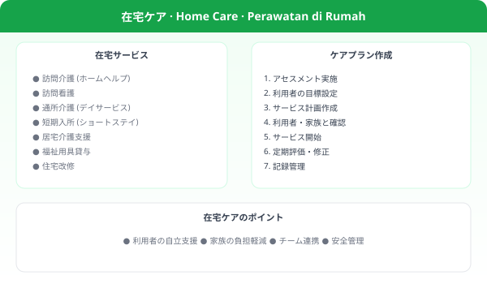

🧓 老化のしくみ老化のしくみ
老化のしくみ
Fisiologi Penuaan
Perubahan Organ · ADL Impact · Dialog · Quiz 国家試験
📌 老化のしくみは介護福祉士試験「こころとからだのしくみ」領域の基礎。各器官の変化が介護ケアにどう影響するかを「変化→影響→ケア対応」のセットで覚えること。
🏥 主要な老化変化と介護への影響
| 器官・系統 | 老化による変化 | 介護への影響と対応 |
|---|---|---|
| 🦴 骨・筋肉 | 骨密度低下（骨粗鬆症）・筋肉量減少（サルコペニア） | 転倒→骨折リスク増大。筋力維持訓練、転倒予防環境整備。 |
| ❤️ 心臓・血管 | 動脈硬化・心拍出量低下・血圧変動 | 起立性低血圧→立ちくらみ。ゆっくり体位変換、急な動作を避ける。 |
| 🫁 呼吸器 | 肺活量低下・咳反射弱化 | 誤嚥リスク増加、感染症に弱くなる。口腔ケア・食事姿勢管理。 |
| 🦷 消化器 | 嚥下機能低下・胃酸減少・便秘傾向 | 誤嚥、栄養不足、便秘。食事形態の工夫・水分・食物繊維補給。 |
| 🧠 神経・脳 | 神経伝導速度低下・反射遅延・記憶力低下 | 転倒、認知症リスク。ゆっくり話す、視覚的手がかりを使う。 |
| 👁️ 感覚器 | 視力・聴力・皮膚感覚・味覚の低下 | 転倒・コミュニケーション困難・熱傷・低栄養。適切な補助具使用。 |
| 🚽 泌尿器 | 膀胱容量減少・括約筋弱化 | 頻尿・失禁。定期的なトイレ誘導、おむつ適切使用。 |
| 🌡️ 体温調節 | 発汗機能低下・体温調節力の低下 | 熱中症・低体温リスク増加。室温管理・水分補給の促進。 |
| 💊 薬物代謝 | 肝腎機能低下→薬の代謝・排泄が遅くなる | 薬の副作用が出やすい。ポリファーマシー（多剤併用）に注意。 |
🚶 フレイル (Frailty) の概念
フレイル(虚弱)は健康と要介護の間にある状態。適切な介入で回復可能（可逆的）。
| フレイルの5基準 (Friedの定義) | 評価 |
|---|---|
| 体重減少 (意図しない) | 3項目以上 → フレイル |
| 筋力低下 (握力測定) | 1-2項目 → プレフレイル |
| 疲労感 (主観的) | 0項目 → 健常 |
| 歩行速度の低下 | |
| 身体活動量の低下 |
💡 フレイル予防の3本柱: 栄養（タンパク質摂取）・運動（筋力トレーニング）・社会参加。介護予防の中心概念として試験に頻出。
💬 Dialog 老化のしくみ
🧓 Dialog 1 — 立ちくらみへの対応
田中さん
あ、立ったらふらっとしました。
Ah, begitu berdiri kepala saya langsung pusing.
介護士
大丈夫ですか。ゆっくり座りましょう。これは起立性低血圧といって、年齢とともに血圧の調節が難しくなるためです。
Baik-baik saja? Mari duduk dulu. Ini namanya hipotensi ortostatik — seiring usia, regulasi tekanan darah menjadi lebih sulit.
介護士
今後は立つ前に少し足首を動かして、ゆっくり立ち上がるようにしましょうね。
Ke depannya, sebelum berdiri gerakkan pergelangan kaki dulu, lalu berdiri pelan-pelan ya.
🌡️ Dialog 2 — Menjelaskan Risiko Heatstroke kepada Keluarga
ご家族
母は暑くても「寒い」と言うんですが、なぜでしょう？
Ibu saya bilang 'dingin' meski cuaca panas, kenapa ya?
介護士
高齢になると体温を調節する機能が低下して、暑さを感じにくくなります。そのため熱中症のリスクが高くなります。水分補給と室温管理がとても大切です。
Seiring usia, fungsi regulasi suhu tubuh menurun sehingga sulit merasakan panas. Karenanya risiko heat stroke meningkat. Hidrasi dan kontrol suhu ruangan sangat penting.
💬 老化のしくみと介護実践
🧓 Dialog 1 — フレイルアセスメント
介護士
山田さん、最近体の調子はいかがですか？歩く速度が少し遅くなった気がしますが。
Pak Yamada, belakangan kondisi badan bagaimana? Sepertinya kecepatan jalan agak melambat.
山田さん
そうですね、すぐ疲れてしまって。食欲もあまりないんです。
Iya, cepat lelah. Nafsu makan juga kurang.
介護士
それはフレイルのサインかもしれません。PTさんや管理栄養士さんと相談して、運動と栄養の改善プランを作りましょう。
Itu mungkin tanda-tanda frailty. Mari konsultasikan ke PT dan ahli gizi untuk buat rencana perbaikan olahraga dan nutrisi.
💊 Dialog 2 — ポリファーマシーの確認
介護士
看護師さん、田中様のお薬が7種類になっています。めまいと転倒が増えている気がするんですが。
Suster, obat Bu Tanaka sudah 7 jenis. Sepertinya pusing dan jatuh semakin sering.
看護師
ポリファーマシーの可能性がありますね。主治医に報告して薬の見直しを依頼しましょう。どの薬を飲み始めた頃からめまいが出ましたか？
Ada kemungkinan polifarmasi. Mari lapor ke dokter dan minta tinjauan obat. Sejak mulai obat yang mana pusingnya muncul?
📊 加齢による身体変化まとめ
| 臓器・機能 | 主な加齢変化 | 介護への影響 |
|---|---|---|
| 筋骨格系 | サルコペニア・骨密度低下 | 転倒・骨折リスク↑・移動能力低下 |
| 心臓・循環 | 最大心拍数低下・動脈硬化 | 運動耐容能低下・起立性低血圧 |
| 呼吸系 | 肺活量低下・咳嗽反射低下 | 感染症リスク↑・誤嚥性肺炎 |
| 消化器系 | 蠕動低下・消化液減少 | 便秘・消化不良・低栄養 |
| 腎・泌尿器 | 腎機能低下・膀胱容量低下 | 薬物蓄積・頻尿・尿失禁 |
| 感覚系 | 視力・聴力・平衡感覚低下 | 転倒・コミュニケーション困難 |
| 免疫系 | 免疫機能低下 | 感染症の重症化リスク↑ |
💬 老化のしくみ
📊 Dialog 1 — 起立性低血圧の説明
利用者
立ち上がるとふらっとするのよ。
Kalau berdiri jadi pusing.
介護士
急に立つと血圧が下がるんです。ゆっくり立ちましょうね。
Kalau berdiri mendadak tekanan darah turun. Mari berdiri pelan-pelan.
利用者
なるほど、気をつけるわ。
Oh begitu, saya akan hati-hati.
📊 Dialog 2 — 加齢による変化
利用者
最近、味がわかりにくくてね。
Akhir-akhir ini sulit merasakan rasa.
介護士
加齢で味覚が変わることがあります。食事の工夫を相談しましょう。
Karena penuaan indera perasa bisa berubah. Mari diskusikan penyesuaian makanan.
📚 Kosakata 老化のしくみ
📚 Kosakata Penting
🧠 Quiz 老化のしくみ — 国家試験対策
📚 重要語彙 — 老化のしくみ
🔊 老化
rōka
penuaan / aging
🔊 加齢
karen
penambahan usia
🔊 生理的老化
seiriteki rōka
penuaan fisiologis
🔊 病的老化
byōteki rōka
penuaan patologis
🔊 細胞老化
saibō rōka
penuaan sel
🔊 酸化ストレス
sanka sutoresu
stres oksidatif
🔊 免疫機能低下
men-eki kinō teika
penurunan imunitas
🔊 フレイル
fureiru
frailty
🔊 サルコペニア
sarukopenīa
sarkopenia
🔊 骨粗鬆症
kotsusoshōshō
osteoporosis
🔊 動脈硬化
dōmyaku kōka
arterioskerosis
🔊 認知機能低下
ninchi kinō teika
penurunan fungsi kognitif
🔊 感覚機能低下
kankaku kinō teika
penurunan fungsi sensorik
🔊 恒常性
kōjō-sei
homeostasis
🔊 予備力低下
yobiryoku teika
penurunan kapasitas cadangan